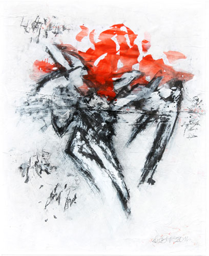

Details
Vernissage: Mittwoch, den 11. Oktober 2017
Zur Ausstellung spricht: DDr. Leopold Kogler (NÖ Dokumentationszentrum f. Moderne Kunst)
Die Ausstellung war bis 10. Jänner 2018 nach Vereinbarung zu besuchen.

Vernissage: Mittwoch, den 11. Oktober 2017
Zur Ausstellung spricht: DDr. Leopold Kogler (NÖ Dokumentationszentrum f. Moderne Kunst)
Die Ausstellung war bis 10. Jänner 2018 nach Vereinbarung zu besuchen.